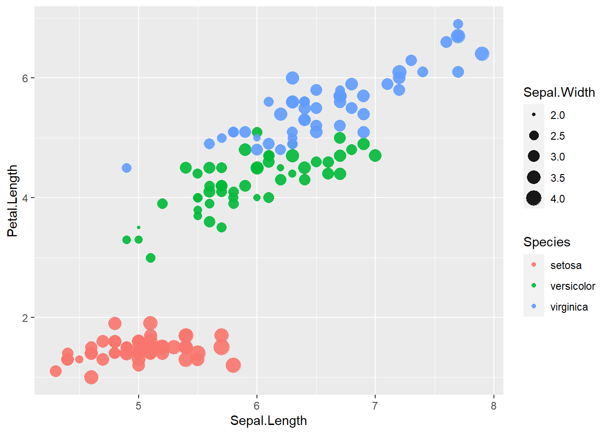

5 Basic statistics
This chapter introduces a practical “starter kit” for working in R from a statistician’s perspective. Before we discuss formal statistical concepts, we need a stable workflow: how to create objects, inspect and clean vectors, manipulate data frames, summarize data, and fit a basic model. These fundamentals are what you will repeatedly use in real projects—whether you are cleaning EHR data, summarizing trial endpoints, or building an analysis dataset for modeling.
The goal here is not to memorize functions, but to understand what each operation is doing and why it matters. Most errors in applied statistics are not due to a complex model; they come from small issues early in the pipeline: missing values, incorrect variable types, accidental coercion to character, or merges that silently duplicate rows. This chapter makes those risks explicit and gives you a set of reliable patterns.
5.1 The essentials of R
R is built around objects. You create an object (vector, matrix, list, data frame), inspect it, transform it, and then use it as input to another function. When you become comfortable with object types and common manipulations, statistical workflows become much faster and safer.
5.1.1 Manipulation of vector
A vector is the simplest data structure in R: an ordered collection of values. However, vectors can hide common pitfalls—especially when they contain mixed types (numbers + characters + missing values). In practice, mixed-type vectors appear when importing data (e.g., a numeric column contains "O" due to a data entry issue).
The code below demonstrates several key diagnostics:
unique()andlength()are used to quickly inspect distinct values and count how many unique entries exist—useful when checking a categorical variable, or spotting unexpected values.as.numeric()converts the vector to numeric, but any non-numeric values becomeNA. This is one of the most common sources of “silent data loss” in analyses.log()illustrates that once coercion introducesNA, downstream transformations may produce missing results.sum(..., na.rm=TRUE)shows a safe pattern for aggregation in the presence of missing values.sort(decreasing=TRUE)is a quick way to inspect extremes and potential outliers.is.na()and indexing (x[!is.na(x)]) demonstrate a standard workflow for filtering out missing values.%in%tests membership (very useful for validation checks).grepl()performs pattern matching and is helpful for detecting problematic strings during cleaning.
## [1] 6## [1] 1.0986123 1.6094379 0.6931472 0.0000000 1.6094379 NA NA## [1] 16## [1] 5 5 3 2 1## [1] FALSE FALSE FALSE FALSE FALSE TRUE TRUE## [1] 3 5 2 1 5## [1] TRUE FALSE## [1] FALSE TRUE FALSE FALSE TRUE FALSE FALSEA practical habit: when you coerce types (e.g., as.numeric()), always check how many NAs were created and why. If a numeric variable suddenly has many NAs, the root cause is usually dirty input values (spaces, commas, symbols, or typos like "O" instead of 0).
5.1.2 Generate sequence or repeted sequece
Simulating data, creating index variables, and generating repeated patterns are extremely common tasks in statistics. Two workhorses are:
seq()to generate sequences (e.g., time points, dose levels, grid search values).rep()to repeat values by cycles (times) or in blocks (each), often used to build study designs or longitudinal datasets.
## [1] 0.0 0.5 1.0 1.5 2.0 2.5 3.0 3.5 4.0 4.5 5.0 5.5 6.0 6.5 7.0
## [16] 7.5 8.0 8.5 9.0 9.5 10.0## [1] 1 2 3 1 2 3 1 2 3 1 2 3## [1] 1 1 1 1 2 2 2 2 3 3 3 3Conceptually:
- times repeats the whole vector multiple times.
- each repeats each element multiple times before moving to the next.
5.1.3 Get directory and write data out and in
A reproducible workflow needs a stable approach to file paths. getwd() tells you the working directory, and setwd() sets it. Writing and reading data are also routine steps when sharing outputs, debugging, or building analysis datasets.
Important practice notes:
- If your project grows, prefer project-based workflows (e.g., RStudio projects) rather than repeatedly calling setwd().
- When exporting, keep track of whether row names are included; they can accidentally become a new column on import.
## [1] "C:/Users/hed2/Downloads/others/mybook2/mybook2"5.1.4 Function
Functions let you encapsulate repeated logic and ensure consistency. In applied statistics, functions are often used to: - standardize transformations, - compute derived variables, - generate reports, - run simulation loops.
The function below transforms x into a modified value. This is intentionally simple, but the pattern is the same for more complex analysis utilities.
## [1] 40 48 36 32 48 NA NAPractical note: a function is safest when it handles missing values and validates input types. Even when you don’t add validation now, it helps to remember that your “future self” (or collaborator) will appreciate defensive checks.
5.1.5 Plot
Exploratory plots help you understand distributions, detect outliers, and identify relationships before modeling. Base R plotting is fast and lightweight, which is why it remains common in statistical practice.
- A scatterplot (
plot(y ~ x, data=...)) is the basic tool for relationships. - A histogram (
hist()) checks distribution shape, skewness, and potential anomalies.


5.1.6 Build model and plot
A linear model (lm) is often the first modeling step: it provides a baseline, helps you understand effect size and direction, and reveals whether a relationship is approximately linear.
This section fits a simple model and overlays the fitted regression line on the scatterplot. The additional vertical and horizontal lines serve as reference thresholds (e.g., a clinically meaningful cutoff, or a design constraint).
model <- lm(dist ~ speed, data=cars)
plot(dist ~ speed, data=cars)
abline(model)
abline(v = 25)
abline(h = 15)
In practice, it is common to annotate plots with reference lines—especially when discussing thresholds, eligibility criteria, or operational boundaries.
5.1.7 Rename names of columns
Clean variable names are more than aesthetics: they affect model formulas, joining keys, and the readability of analysis code. The code below inspects column names and then renames them.
A caution: introducing spaces (e.g., "speed per hour") makes later coding more cumbersome because you must use backticks in formulas and selection. In many applied projects, analysts prefer names like speed_per_hour for reliability.
## [1] "speed" "dist"5.1.8 Class of dataframe
Understanding classes is crucial because many R functions behave differently depending on the object type.
matrixanddata.framelook similar but differ in important ways:- A matrix is homogeneous (all values must be the same type).
- A data frame can store different types across columns (numeric, factor, character).
The code below converts cars to a matrix and back to a data frame, then checks classes. It also demonstrates transposition (t()), which is defined for matrices.
## [1] "matrix" "array"## [1] "data.frame"| speed per hour | 4 | 4 | 7 | 7 | 8 | 9 | 10 | 10 | 10 | 11 | 11 | 12 | 12 | 12 | 12 | 13 | 13 | 13 | 13 | 14 | 14 | 14 | 14 | 15 | 15 | 15 | 16 | 16 | 17 | 17 | 17 | 18 | 18 | 18 | 18 | 19 | 19 | 19 | 20 | 20 | 20 | 20 | 20 | 22 | 23 | 24 | 24 | 24 | 24 | 25 |
| total dist | 2 | 10 | 4 | 22 | 16 | 10 | 18 | 26 | 34 | 17 | 28 | 14 | 20 | 24 | 28 | 26 | 34 | 34 | 46 | 26 | 36 | 60 | 80 | 20 | 26 | 54 | 32 | 40 | 32 | 40 | 50 | 42 | 56 | 76 | 84 | 36 | 46 | 68 | 32 | 48 | 52 | 56 | 64 | 66 | 54 | 70 | 92 | 93 | 120 | 85 |
Practical warning: converting a data frame with mixed types to a matrix often forces everything to character. That can break models and summaries if you do not convert back carefully.
5.1.9 Generate new variable for dataframe (character)
Identifiers and grouping variables are often created using string concatenation. paste0() is a clean way to build IDs without spaces.
The examples below create patterned labels like "raster_1", then attach them to the data frame. These patterns are useful when simulating repeated measures or defining cluster membership.
## [1] "raster_1" "raster_2" "raster_3" "raster_4" "raster_5" "raster_6"
## [7] "raster_7" "raster_8" "raster_9" "raster_10"## [1] "raster_1" "raster_2" "raster_3" "raster_4" "raster_5" "raster_1"
## [7] "raster_2" "raster_3" "raster_4" "raster_5" "raster_1" "raster_2"
## [13] "raster_3" "raster_4" "raster_5" "raster_1" "raster_2" "raster_3"
## [19] "raster_4" "raster_5" "raster_1" "raster_2" "raster_3" "raster_4"
## [25] "raster_5" "raster_1" "raster_2" "raster_3" "raster_4" "raster_5"
## [31] "raster_1" "raster_2" "raster_3" "raster_4" "raster_5" "raster_1"
## [37] "raster_2" "raster_3" "raster_4" "raster_5" "raster_1" "raster_2"
## [43] "raster_3" "raster_4" "raster_5" "raster_1" "raster_2" "raster_3"
## [49] "raster_4" "raster_5"5.1.10 Create a new dataframe using ‘rnorm’ - random number from distribution
Simulation is a core skill in modern statistical practice. Here we generate:
- a numeric variable (sample) from a normal distribution,
- a grouping variable,
- an ID variable to support merging.
The function rnorm(n, mean, sd) generates normal random variables. Rounding is used for readability.
sample <- round((rnorm(50,0, 1)),2)
group <- paste0("raster_", rep(x = 1:5, times = 10))
df_join <- data.frame(sample, group)
df_join$id <- paste0("raster_", 1:50)5.1.11 Left join two dataframes
Merging tables is one of the most error-prone steps in applied analysis. left_join() keeps all rows from the left table and adds matching columns from the right table.
Key practice:
- Always confirm uniqueness of the key (id) in each table before joining.
- After joining, check row counts and inspect for accidental duplication.
| speed per hour | total dist | group.x | id | sample | group.y |
|---|---|---|---|---|---|
| 4 | 2 | raster_1 | raster_1 | 0.84 | raster_1 |
| 4 | 10 | raster_2 | raster_2 | 0.15 | raster_2 |
| 7 | 4 | raster_3 | raster_3 | -1.14 | raster_3 |
| 7 | 22 | raster_4 | raster_4 | 1.25 | raster_4 |
| 8 | 16 | raster_5 | raster_5 | 0.43 | raster_5 |
| 9 | 10 | raster_1 | raster_6 | -0.30 | raster_1 |
5.1.12 Select variables
Selecting columns is a common step for building analysis-ready datasets. This also helps reduce clutter when checking intermediate results.
| group.x | id |
|---|---|
| raster_1 | raster_1 |
| raster_2 | raster_2 |
| raster_3 | raster_3 |
| raster_4 | raster_4 |
| raster_5 | raster_5 |
| raster_1 | raster_6 |
| raster_2 | raster_7 |
| raster_3 | raster_8 |
| raster_4 | raster_9 |
| raster_5 | raster_10 |
| raster_1 | raster_11 |
| raster_2 | raster_12 |
| raster_3 | raster_13 |
| raster_4 | raster_14 |
| raster_5 | raster_15 |
| raster_1 | raster_16 |
| raster_2 | raster_17 |
| raster_3 | raster_18 |
| raster_4 | raster_19 |
| raster_5 | raster_20 |
| raster_1 | raster_21 |
| raster_2 | raster_22 |
| raster_3 | raster_23 |
| raster_4 | raster_24 |
| raster_5 | raster_25 |
| raster_1 | raster_26 |
| raster_2 | raster_27 |
| raster_3 | raster_28 |
| raster_4 | raster_29 |
| raster_5 | raster_30 |
| raster_1 | raster_31 |
| raster_2 | raster_32 |
| raster_3 | raster_33 |
| raster_4 | raster_34 |
| raster_5 | raster_35 |
| raster_1 | raster_36 |
| raster_2 | raster_37 |
| raster_3 | raster_38 |
| raster_4 | raster_39 |
| raster_5 | raster_40 |
| raster_1 | raster_41 |
| raster_2 | raster_42 |
| raster_3 | raster_43 |
| raster_4 | raster_44 |
| raster_5 | raster_45 |
| raster_1 | raster_46 |
| raster_2 | raster_47 |
| raster_3 | raster_48 |
| raster_4 | raster_49 |
| raster_5 | raster_50 |
5.1.13 Filter observations
Filtering creates analytic subsets, such as: - a treatment arm, - a subgroup, - an eligibility population, - a set of observations meeting a condition.
This section shows filtering by a grouping string, and filtering by numeric conditions (with a variable name that contains spaces, requiring backticks).
| speed per hour | total dist | group.x | id | sample | group.y |
|---|---|---|---|---|---|
| 4 | 2 | raster_1 | raster_1 | 0.84 | raster_1 |
| 9 | 10 | raster_1 | raster_6 | -0.30 | raster_1 |
| 11 | 28 | raster_1 | raster_11 | 0.55 | raster_1 |
| 13 | 26 | raster_1 | raster_16 | -0.21 | raster_1 |
| 14 | 36 | raster_1 | raster_21 | -0.40 | raster_1 |
| 15 | 54 | raster_1 | raster_26 | -0.03 | raster_1 |
| 17 | 50 | raster_1 | raster_31 | -1.55 | raster_1 |
| 19 | 36 | raster_1 | raster_36 | -0.50 | raster_1 |
| 20 | 52 | raster_1 | raster_41 | 0.45 | raster_1 |
| 24 | 70 | raster_1 | raster_46 | -2.31 | raster_1 |
speed_dist <- filter(data_all, data_all$`speed per hour` < 11 & data_all$`total dist` >= 10)
speed_dist| speed per hour | total dist | group.x | id | sample | group.y |
|---|---|---|---|---|---|
| 4 | 10 | raster_2 | raster_2 | 0.15 | raster_2 |
| 7 | 22 | raster_4 | raster_4 | 1.25 | raster_4 |
| 8 | 16 | raster_5 | raster_5 | 0.43 | raster_5 |
| 9 | 10 | raster_1 | raster_6 | -0.30 | raster_1 |
| 10 | 18 | raster_2 | raster_7 | 0.90 | raster_2 |
| 10 | 26 | raster_3 | raster_8 | 0.88 | raster_3 |
| 10 | 34 | raster_4 | raster_9 | 0.82 | raster_4 |
5.1.14 Append rows
Row-binding is used when you want to stack two datasets with the same structure. This is common when combining: - multiple batches, - subsets, - cohorts.
rbind() requires matching columns (names and order). In tidyverse workflows, bind_rows() is often more forgiving, but rbind() is fine when structures match exactly.
| speed per hour | total dist | group.x | id | sample | group.y |
|---|---|---|---|---|---|
| 4 | 2 | raster_1 | raster_1 | 0.84 | raster_1 |
| 9 | 10 | raster_1 | raster_6 | -0.30 | raster_1 |
| 11 | 28 | raster_1 | raster_11 | 0.55 | raster_1 |
| 13 | 26 | raster_1 | raster_16 | -0.21 | raster_1 |
| 14 | 36 | raster_1 | raster_21 | -0.40 | raster_1 |
| 15 | 54 | raster_1 | raster_26 | -0.03 | raster_1 |
| 17 | 50 | raster_1 | raster_31 | -1.55 | raster_1 |
| 19 | 36 | raster_1 | raster_36 | -0.50 | raster_1 |
| 20 | 52 | raster_1 | raster_41 | 0.45 | raster_1 |
| 24 | 70 | raster_1 | raster_46 | -2.31 | raster_1 |
| 4 | 10 | raster_2 | raster_2 | 0.15 | raster_2 |
| 7 | 22 | raster_4 | raster_4 | 1.25 | raster_4 |
| 8 | 16 | raster_5 | raster_5 | 0.43 | raster_5 |
| 9 | 10 | raster_1 | raster_6 | -0.30 | raster_1 |
| 10 | 18 | raster_2 | raster_7 | 0.90 | raster_2 |
| 10 | 26 | raster_3 | raster_8 | 0.88 | raster_3 |
| 10 | 34 | raster_4 | raster_9 | 0.82 | raster_4 |
5.1.15 Create new variables instead of old variables
Data cleaning often involves transforming a variable into a more usable form. Here we round sample to one decimal place. Note that mutate() returns a modified data frame; you typically assign it back if you want to keep the change.
| speed per hour | total dist | group.x | id | sample | group.y |
|---|---|---|---|---|---|
| 4 | 2 | raster_1 | raster_1 | 0.8 | raster_1 |
| 4 | 10 | raster_2 | raster_2 | 0.1 | raster_2 |
| 7 | 4 | raster_3 | raster_3 | -1.1 | raster_3 |
| 7 | 22 | raster_4 | raster_4 | 1.2 | raster_4 |
| 8 | 16 | raster_5 | raster_5 | 0.4 | raster_5 |
| 9 | 10 | raster_1 | raster_6 | -0.3 | raster_1 |
| 10 | 18 | raster_2 | raster_7 | 0.9 | raster_2 |
| 10 | 26 | raster_3 | raster_8 | 0.9 | raster_3 |
| 10 | 34 | raster_4 | raster_9 | 0.8 | raster_4 |
| 11 | 17 | raster_5 | raster_10 | 0.7 | raster_5 |
| 11 | 28 | raster_1 | raster_11 | 0.6 | raster_1 |
| 12 | 14 | raster_2 | raster_12 | -0.1 | raster_2 |
| 12 | 20 | raster_3 | raster_13 | -0.3 | raster_3 |
| 12 | 24 | raster_4 | raster_14 | -0.4 | raster_4 |
| 12 | 28 | raster_5 | raster_15 | -0.7 | raster_5 |
| 13 | 26 | raster_1 | raster_16 | -0.2 | raster_1 |
| 13 | 34 | raster_2 | raster_17 | -1.3 | raster_2 |
| 13 | 34 | raster_3 | raster_18 | 2.2 | raster_3 |
| 13 | 46 | raster_4 | raster_19 | 1.2 | raster_4 |
| 14 | 26 | raster_5 | raster_20 | -1.1 | raster_5 |
| 14 | 36 | raster_1 | raster_21 | -0.4 | raster_1 |
| 14 | 60 | raster_2 | raster_22 | -0.5 | raster_2 |
| 14 | 80 | raster_3 | raster_23 | 0.8 | raster_3 |
| 15 | 20 | raster_4 | raster_24 | -0.1 | raster_4 |
| 15 | 26 | raster_5 | raster_25 | 0.2 | raster_5 |
| 15 | 54 | raster_1 | raster_26 | 0.0 | raster_1 |
| 16 | 32 | raster_2 | raster_27 | 0.0 | raster_2 |
| 16 | 40 | raster_3 | raster_28 | 1.4 | raster_3 |
| 17 | 32 | raster_4 | raster_29 | -0.2 | raster_4 |
| 17 | 40 | raster_5 | raster_30 | 1.5 | raster_5 |
| 17 | 50 | raster_1 | raster_31 | -1.6 | raster_1 |
| 18 | 42 | raster_2 | raster_32 | 0.6 | raster_2 |
| 18 | 56 | raster_3 | raster_33 | 0.1 | raster_3 |
| 18 | 76 | raster_4 | raster_34 | 0.2 | raster_4 |
| 18 | 84 | raster_5 | raster_35 | 0.4 | raster_5 |
| 19 | 36 | raster_1 | raster_36 | -0.5 | raster_1 |
| 19 | 46 | raster_2 | raster_37 | -0.3 | raster_2 |
| 19 | 68 | raster_3 | raster_38 | -1.0 | raster_3 |
| 20 | 32 | raster_4 | raster_39 | -1.1 | raster_4 |
| 20 | 48 | raster_5 | raster_40 | 0.3 | raster_5 |
| 20 | 52 | raster_1 | raster_41 | 0.4 | raster_1 |
| 20 | 56 | raster_2 | raster_42 | 0.0 | raster_2 |
| 20 | 64 | raster_3 | raster_43 | 0.9 | raster_3 |
| 22 | 66 | raster_4 | raster_44 | 2.0 | raster_4 |
| 23 | 54 | raster_5 | raster_45 | -0.5 | raster_5 |
| 24 | 70 | raster_1 | raster_46 | -2.3 | raster_1 |
| 24 | 92 | raster_2 | raster_47 | 1.0 | raster_2 |
| 24 | 93 | raster_3 | raster_48 | -0.7 | raster_3 |
| 24 | 120 | raster_4 | raster_49 | -0.7 | raster_4 |
| 25 | 85 | raster_5 | raster_50 | 1.0 | raster_5 |
5.1.16 summarise statistics
Summarization produces descriptive statistics and quick QA checks. In practice, it is a good idea to confirm that you are summarizing the intended variables and that the variable types are correct.
A practical note for this code chunk: max("total dist") will not compute the maximum of the column; it is taking a character string. In real analyses, always verify that your summary outputs look plausible.
| mean_speed | max_dist |
|---|---|
| 0.1104 | total dist |
5.1.17 Group dataframe then summarise statistics
Grouping is essential for stratified summaries (by arm, site, subgroup, visit). The typical pattern is:
group_by()
summarise()
This yields one row per group.
data_all_group <- group_by(data_all, group.x)
summarise(data_all_group,
mean_speed = mean(sample),
max_dist = max( "total dist" ))| mean_speed | max_dist |
|---|---|
| 0.1104 | total dist |
5.1.18 Ungroup then summarise statistics
After group operations, the data may remain grouped. ungroup() removes grouping, which prevents unexpected behavior in later steps.
This is a common best practice: ungroup after grouped summaries unless you intentionally want grouping to persist.
ungroup_data <- ungroup( data_all_group)
summarise( ungroup_data ,
mean_speed = mean(sample),
max_dist = max( "total dist" ))| mean_speed | max_dist |
|---|---|
| 0.1104 | total dist |
5.1.19 Summary linear regression model
This section fits a linear regression using the renamed columns. The summary() output provides:
- coefficient estimates,
- standard errors,
- t-tests and p-values (under standard assumptions),
- R-squared and residual standard error.
Even when you plan to use more advanced models, a simple linear regression is a valuable baseline for interpretation and for detecting obvious data issues.
##
## Call:
## lm(formula = cars$`total dist` ~ cars$`speed per hour`)
##
## Residuals:
## Min 1Q Median 3Q Max
## -29.069 -9.525 -2.272 9.215 43.201
##
## Coefficients:
## Estimate Std. Error t value Pr(>|t|)
## (Intercept) -17.5791 6.7584 -2.601 0.0123 *
## cars$`speed per hour` 3.9324 0.4155 9.464 1.49e-12 ***
## ---
## Signif. codes: 0 '***' 0.001 '**' 0.01 '*' 0.05 '.' 0.1 ' ' 1
##
## Residual standard error: 15.38 on 48 degrees of freedom
## Multiple R-squared: 0.6511, Adjusted R-squared: 0.6438
## F-statistic: 89.57 on 1 and 48 DF, p-value: 1.49e-125.1.20 Create frequency table
Frequency tables help you check distributions across groups, detect empty cells, and validate merges.
Two-way tables are also a quick way to identify whether a categorical variable is unevenly distributed across groups.
| / | raster_1 | raster_2 | raster_3 | raster_4 | raster_5 |
|---|---|---|---|---|---|
| 4 | 1 | 1 | 0 | 0 | 0 |
| 7 | 0 | 0 | 1 | 1 | 0 |
| 8 | 0 | 0 | 0 | 0 | 1 |
| 9 | 1 | 0 | 0 | 0 | 0 |
| 10 | 0 | 1 | 1 | 1 | 0 |
| 11 | 1 | 0 | 0 | 0 | 1 |
| 12 | 0 | 1 | 1 | 1 | 1 |
| 13 | 1 | 1 | 1 | 1 | 0 |
| 14 | 1 | 1 | 1 | 0 | 1 |
| 15 | 1 | 0 | 0 | 1 | 1 |
| 16 | 0 | 1 | 1 | 0 | 0 |
| 17 | 1 | 0 | 0 | 1 | 1 |
| 18 | 0 | 1 | 1 | 1 | 1 |
| 19 | 1 | 1 | 1 | 0 | 0 |
| 20 | 1 | 1 | 1 | 1 | 1 |
| 22 | 0 | 0 | 0 | 1 | 0 |
| 23 | 0 | 0 | 0 | 0 | 1 |
| 24 | 1 | 1 | 1 | 1 | 0 |
| 25 | 0 | 0 | 0 | 0 | 1 |
5.1.21 Value and variable label
Labels are especially useful for reporting, tables, and clinical datasets where you want human-readable metadata. This section shows:
- inspecting levels of a factor,
- relabeling factor levels,
- adding a variable label using
Hmisc::label().
| setosa | versicolor | virginica |
|---|---|---|
| 50 | 50 | 50 |
iris$Species <- factor(iris$Species,labels = c( "setosanew","versicolornew","virginianew"))
table(iris$Species)| setosanew | versicolornew | virginianew |
|---|---|---|
| 50 | 50 | 50 |
| setosanew | versicolornew | virginianew |
|---|---|---|
| 50 | 50 | 50 |
In applied work, consistent labeling helps downstream reporting tools and reduces ambiguity when sharing datasets with collaborators.
5.1.22 Recode a variable
Recoding is frequently used to: - create categorical versions of continuous variables, - define risk groups, - implement analysis definitions (e.g., responder/non-responder).
This chunk uses nested ifelse() to create a derived variable based on Sepal.Length. While nested ifelse() works, in complex real projects, case_when() is often clearer and less error-prone. The key concept remains: define rules explicitly and validate results with a frequency table.
irisifelse <- iris%>%
mutate(Sepal.Length2 = ifelse(Sepal.Length < 6 , "level1", ifelse(Sepal.Length < 7 , "level2", Sepal.Length)))
table(irisifelse$Sepal.Length2)| 7 | 7.1 | 7.2 | 7.3 | 7.4 | 7.6 | 7.7 | 7.9 | level1 | level2 |
|---|---|---|---|---|---|---|---|---|---|
| 1 | 1 | 3 | 1 | 1 | 1 | 4 | 1 | 83 | 54 |
5.2 Central Limit Theorem
The Central Limit Theorem (CLT) is one of the most important ideas in statistics: it justifies why normal-based inference often works even when the underlying data are not normal, as long as sample sizes are reasonably large and observations are independent.
In practice, the CLT supports: - approximate confidence intervals for means, - normal approximations for many estimators, - reasoning about sampling variability.
5.3 Common statistical distribution
Statistical distributions are the language of uncertainty. In applied work, you encounter them in: - modeling outcomes (normal, binomial, Poisson), - generating simulations, - defining priors and likelihoods, - interpreting p-values and confidence intervals.
Chapter takeaways
By the end of this chapter, you should be comfortable with:
- Inspecting vectors, handling missing values, and diagnosing coercion issues
- Generating sequences and repeated patterns for indexing and simulation
- Reading/writing data and understanding the working directory
- Writing simple functions to standardize repeated steps
- Making quick exploratory plots
- Fitting and interpreting a basic linear regression
- Managing variable names, classes, and joins
- Building group-wise summaries and validating derived variables
These are not “intro programming trivia”—they are the daily tools of statistical practice. Once these fundamentals are stable, you can scale up to robust workflows: reproducible reporting, simulation-based power analysis, and model-based inference.